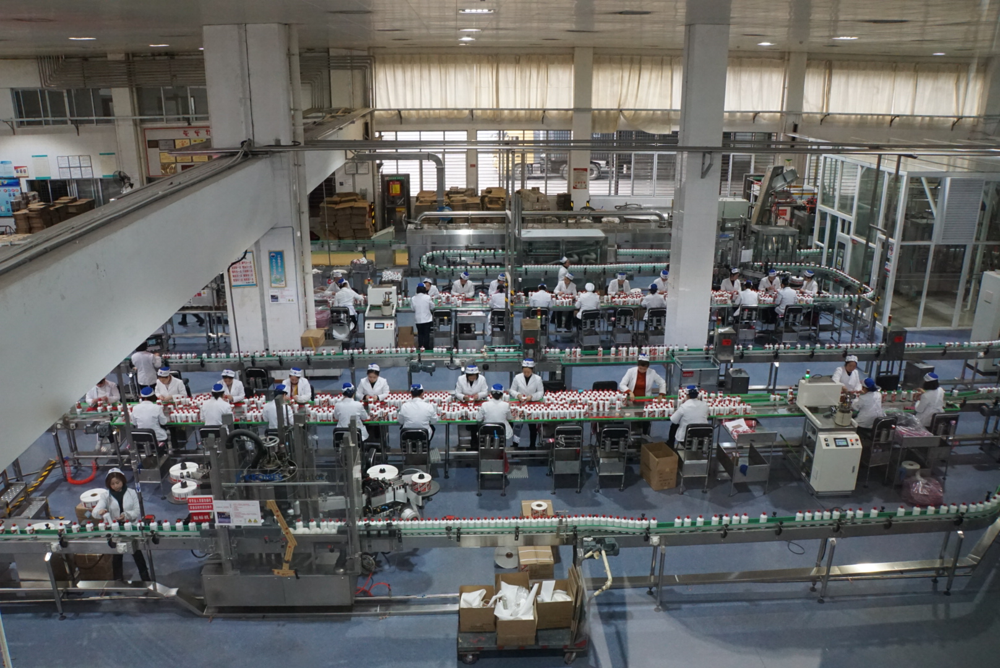
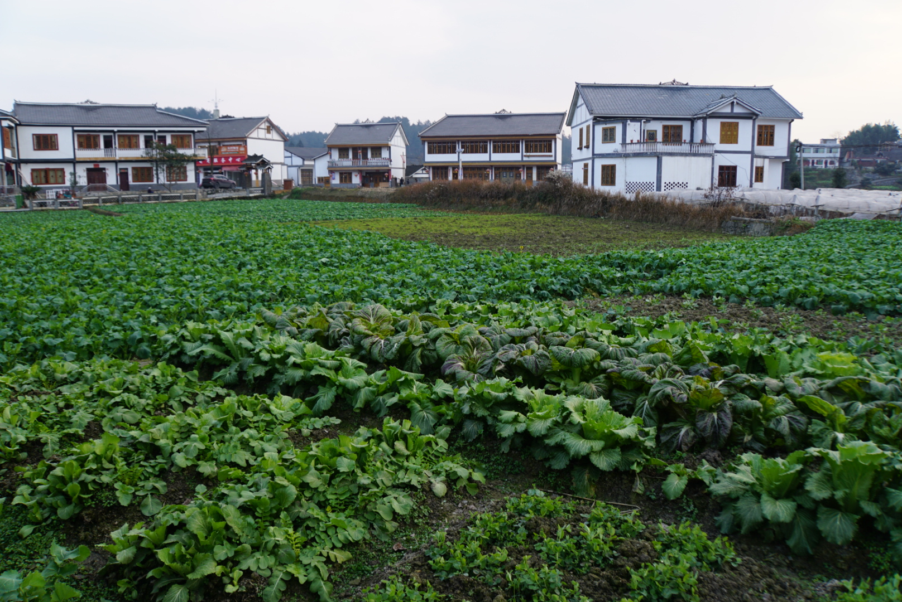
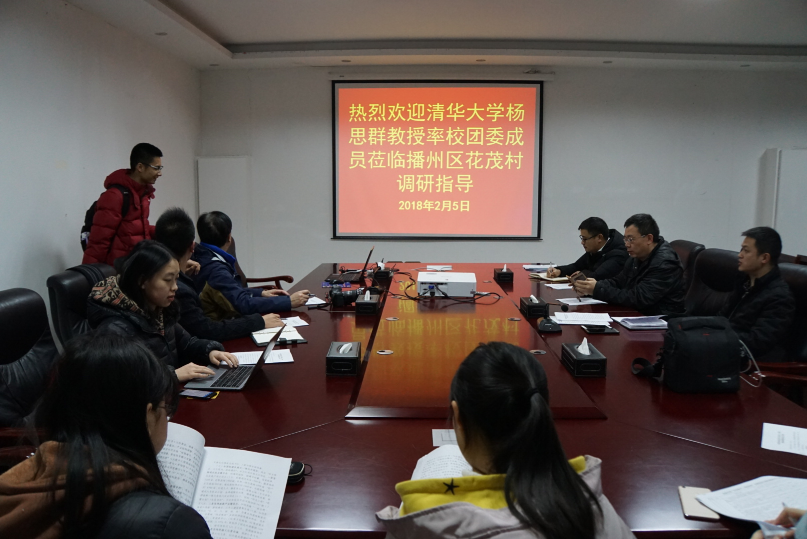
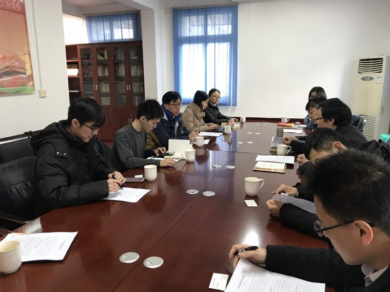

<div id="ajax-page" class="ajax-page-content">
    <div class="ajax-page-wrapper">
        <div class="ajax-page-nav">
            <!--<div class="nav-item ajax-page-prev-next">-->
                <!--<a class="ajax-page-load" href="color.html"><i class="zmdi zmdi-chevron-left"></i></a>-->
                <!--<a class="ajax-page-load" href="color.html"><i class="zmdi zmdi-chevron-right"></i></a>-->
            <!--</div>-->
            <div class="nav-item ajax-page-close-button">
                <a id="ajax-page-close-button" href="#"><i class="zmdi zmdi-close"></i></a>
            </div>
        </div>

        <div class="ajax-page-title">
            <h1>Guizhou: Big Data Industry and Poverty Alleviation</h1>
        </div>

        <div class="row">
            <div class="col-sm-7 col-md-7 portfolio-block">
                <div class="owl-carousel portfolio-page-carousel">
                    <div class="item">
                        
                    </div>
                    <div class="item">
                        
                    </div>
                    <div class="item">
                        
                    </div>
                    <div class="item">
                        
                    </div>
                    <div class="item">
                        
                    </div>
                    <div class="item">
                        
                    </div>
                </div>

                <!--<div class="portfolio-page-video embed-responsive embed-responsive-16by9">-->
                  <!--<iframe class="embed-responsive-item" src="https://player.vimeo.com/video/97102654?autoplay=0"></iframe>-->
                <!--</div>-->

                <!--
                <div class="portfolio-page-image">
                    
                </div>
                -->

                <script type="text/javascript">
                    jQuery(document).ready(function($){

                        $('.portfolio-page-carousel').owlCarousel({
                            smartSpeed:1200,
                            items: 1,
                            loop: true,
                            dots: true,
                            nav: true,
                            navText: false,
                            margin: 10
                        });

                    });
                </script>
            </div>

            <div class="col-sm-5 col-md-5 portfolio-block">
                <!-- Project Description -->
                <div class="block-title">
                    <h3>Description</h3>
                </div>
                <ul class="project-general-info">
                    <li><p><i class="fa fa-user"></i>Yifan Wei, Zhongwen Lin, Shiyin Wang, Muheng Li, Jing Zhang, Jiaao He, Jiayi Deng, Yapeng Sun, Kun Lang, Siqun Yang</p></li>
                    <li><p><i class="fa fa-globe"></i> Daily News
                        <a href="https://mp.weixin.qq.com/s/J022kfzheHCwBQa1NxDEdQ" target="_blank">1</a>
                        <a href="https://mp.weixin.qq.com/s/j0FlzoeoU3uy3FvUYz5W9A" target="_blank">2</a>
                        <a href="https://mp.weixin.qq.com/s/8lTYdB5I2FIx8jUkEfRUTA" target="_blank">3</a>
                        <a href="https://mp.weixin.qq.com/s/mXOSvwAKPuLlDid7rpULVQ" target="_blank">4</a>
                        <a href="https://mp.weixin.qq.com/s/CIHW5IpJzzWYbrYNU11bow" target="_blank">5</a>
                        <a href="https://mp.weixin.qq.com/s/8UmH2GIEzSMDG5n8hEW8uw" target="_blank">6</a>
                        <a href="https://mp.weixin.qq.com/s/-9XYa5rYmi3DlWZKwBHG9A" target="_blank">7</a></p>
                    </li>
                    <li><p><i class="fa fa-file-text-o"></i><a href="field/guizhou/guizhou_bigdata.pdf" target="_blank">Report</a></p></li>
                    <li><p><i class="fa fa-calendar"></i>Feb 2018</p></li>
                </ul>

                <p class="text-justify">Guizhou is a landlocked province in Southwest China. It is considered a relatively poor and economically undeveloped province, with the third-lowest GDP per capita in China, ahead of Gansu neighboring Yunnan. However, it is also one of China's fastest-growing economies since 2016. The Chinese government is looking to develop Guizhou as a data hub because of the excellent climate conditions for building data centers(e.g., Apple iCloud, Tencent, Alibaba).</p>
                <p class="text-justify">We visited both the traditional industries (Moutai white wine) and the big data industry (Guizhou Cloud). Besides, we interviewed with the multiple government officers and local peoples about the big data policies design, digital government service, precise poverty alleviation, intelligent agriculture, etc.</p>
                <p class="text-justify">This field trip broadened my horizon by providing a first-hand impression about how can big data improve social welfare.</p>


                <!-- /Project Description -->

                <!-- Technology -->
                <div class="tags-block">
                    <ul class="tags">
                        <li><a>Field Trip</a></li>
                        <li><a>Poverty</a></li>
                        <li><a>Big Data</a></li>
                    </ul>
                </div>
                <!-- /Technology -->

                <!-- Share Buttons -->
                <div class="btn-group share-buttons">
                    <div class="block-title">
                        <h3>Share</h3>
                    </div>
                    <a href="https://www.facebook.com/sharer/sharer.php?u=https://shiyinw.github.io/" target="_blank" class="btn"><i class="fa fa-facebook"></i> </a>
                    <a href="http://www.twitter.com/share?url=https://shiyinw.github.io/" target="_blank" class="btn"><i class="fa fa-twitter"></i> </a>
                </div>
                <!-- /Share Buttons -->
            </div>
        </div>
    </div>
</div>
